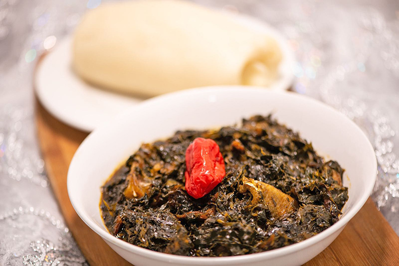
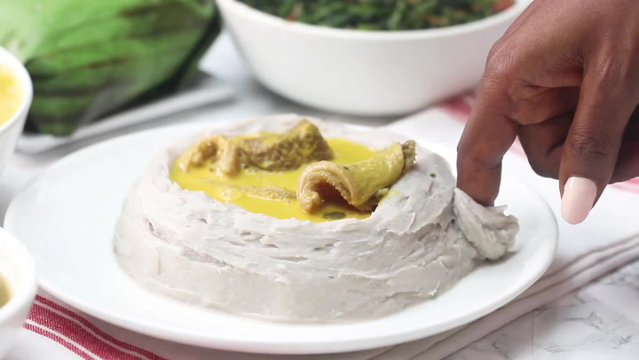
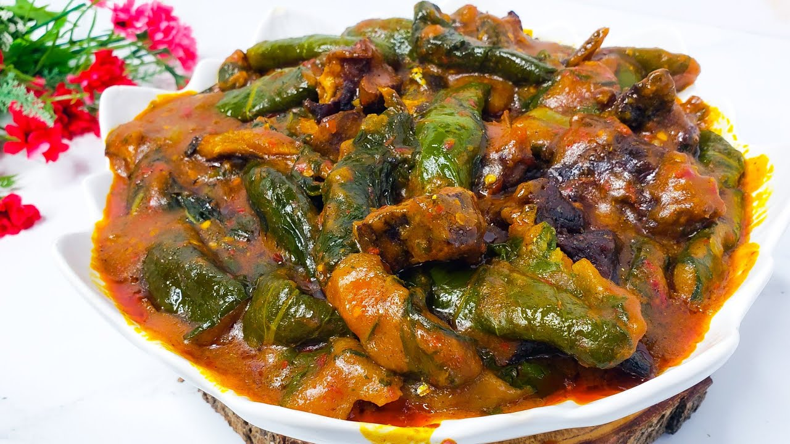

Ndolé is a Cameroonian dish consisting of stewed nuts, ndoleh, and fish or beef. The dish may also contain shrimp. It is traditionally eaten with plantains, bobolo or miondo, etc…

Eru is a vegetable from Cameroon. It is a specialty of the Bayangi people, of the Manyu region in southwestern Cameroon. It is vegetable soup made up of finely shredded leaves of the eru or okok. The eru is cooked with waterleaf or spinach, palm oil, crayfish, and either smoked fish, cow skin or beef.

Achu soup is a traditional food in Cameroon, a yellow soup. It is made with cocoyam, Spices, water, palm oil, and "canwa or Nikki" (limestone), and fish are other ingredients.

Ekwang (also known as "Ekpang Nkukwo" in “Efik”, "Ekpang" in “Ibibio/Annang” and "Ekwang Coco") is a Cameroonian and Nigerian dish native to the Bakweri, Bafaw, Oroko, Cross River State and Akwa Ibom State people. It is made with freshly grated cocoyams that are wrapped in cocoyam leaves. Other ingredients include fresh or smoked fish, meat, palm oil, crayfish Periwinkle and seasoning.